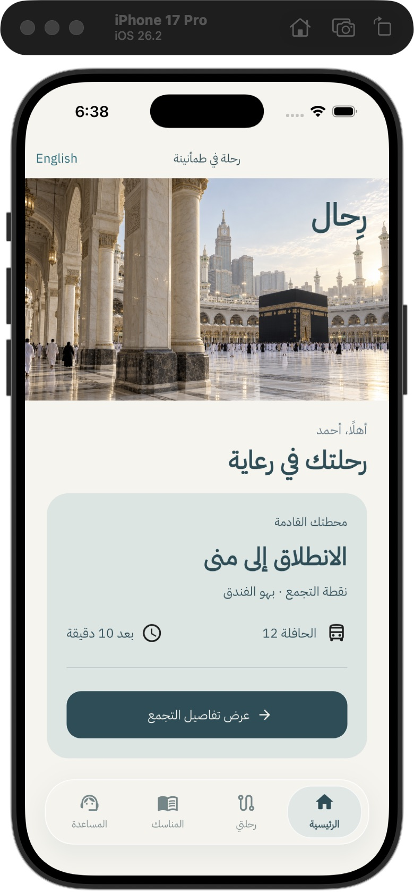

Every journey,
cared for.
An Arabic-first pilgrimage platform connecting pilgrims, campaign staff and operations.
Development milestone 0.1
Care, translated into workflows.
Know the next movement. Find your group. Record attendance. Put a clear request in the hands of the campaign team.
Two native Flutter apps share a design system and repository boundaries. A React console coordinates journeys through a NestJS API and PostgreSQL.
Evidence over promises.
- Two iOS simulator application builds passed.
- Two Flutter widget scenarios and three API integration scenarios passed locally.
- Attendance was verified through the browser and database.
Built by Hussein.
Source is private. Authorized technical reviews can be arranged. This is an early development milestone; production authentication, the remaining operations modules, offline maps and performance profiling are still in progress.